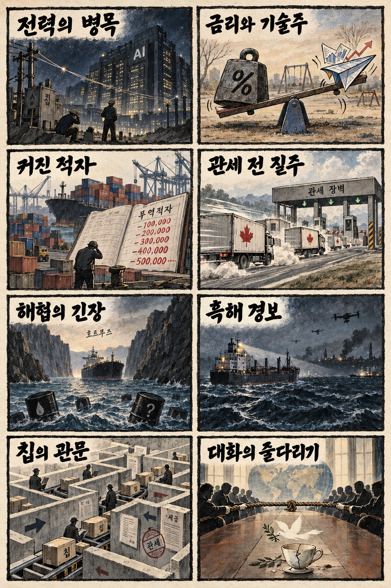
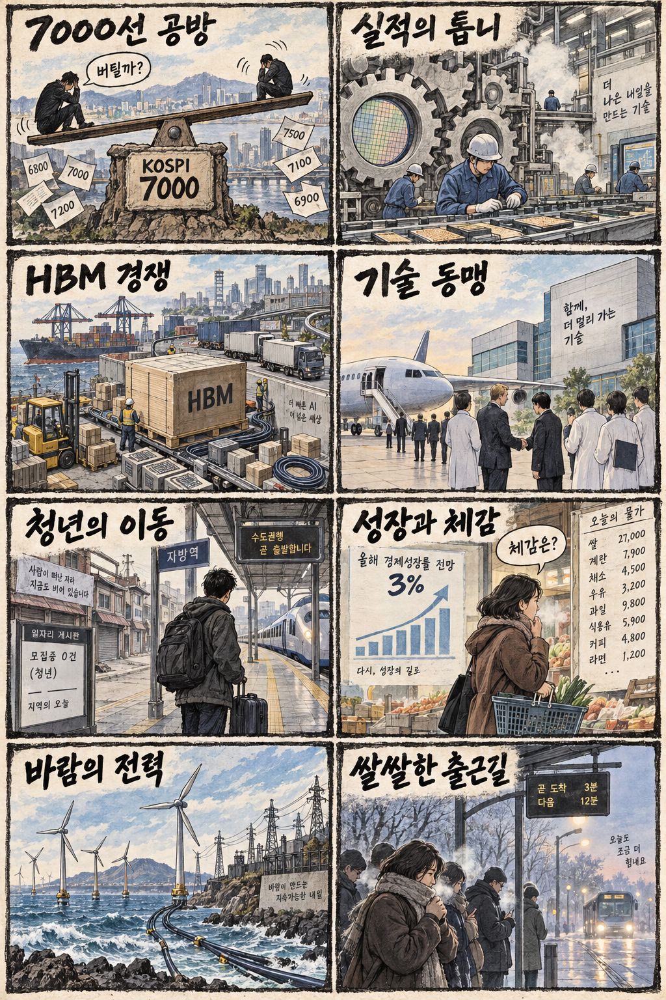

01
마벨 · 271.26→287.01달러 · +5.81%
내용요약 시가 대비 +5.81% 급등했고 매출 전망치 상향이 당일 특징주 보도로 확인됐습니다.
예상여파 네트워크 반도체 수요 기대에는 우호적이지만 국내 종목은 실제 공급 관계와 실적 기여를 따로 확인해야 합니다.
MORNING_BRIEFING_20261007
작성 시각: 2026-10-07 06:38 KST · 직전 미국 정규장과 2026-10-07 KST 당일 공개 기사 기준
직전 미국 정규장인 10월 6일 뉴욕증시는 다우 +0.49%, S&P 500 +0.58%, 나스닥 +0.45%로 동반 상승했습니다. 국채금리가 숨을 고른 가운데 S&P 500은 사상 최고치를 경신했다는 당일 보도가 나왔고, 마벨의 실적 전망 상향이 기술주 일부에 힘을 보탰습니다. 한국 증시는 미국 위험선호 회복과 전날 KOSPI 조정, KOSDAQ 강세의 엇갈린 흐름 속에서 반도체 실적과 외국인 수급을 확인해야 합니다.
| 지수 | 종가 | 등락률 | 한국 증시 시사점 |
|---|---|---|---|
| 다우존스 | 51,521.28 | +0.49% | 금리 진정과 위험선호 회복은 한국 증시에 우호적 |
| S&P 500 | 7,818.93 | +0.58% | 금리 진정과 위험선호 회복은 한국 증시에 우호적 |
| 나스닥 종합 | 27,599.79 | +0.45% | 기술주 강세는 우호적이나 반도체 종목 차별화 주의 |
국채금리 숨고르기와 위험선호 회복으로 사상 최고치를 새로 썼습니다.
매출 전망 상향 보도와 함께 조사 종목 중 가장 강한 시가 대비 상승을 기록했습니다.
전날 7,000선 아래로 밀린 반면 KOSDAQ은 +2.98% 상승해 시장 차별화가 컸습니다.
장전 시가·수급 미형성과 검증 표본 부족으로 강제 추천 없이 관망합니다.
10월 6일 보고서는 공식 추천을 내지 않았습니다. 게시 당시 판단을 유지하며 사후 종목을 추가하지 않습니다.
| 시장 | 종가 | 등락률 | 기준 |
|---|---|---|---|
| KOSPI | 6,941.39 | -0.89% | 10월 6일 정규장 · 시가 대비 -1.47% |
| KOSDAQ | 919.92 | +2.98% | 10월 6일 정규장 · 시가 대비 +1.97% |
| 다우존스 | 51,521.28 | +0.49% | 미국 10월 6일 정규장 |
| S&P 500 | 7,818.93 | +0.58% | 미국 10월 6일 정규장 |
| 나스닥 종합 | 27,599.79 | +0.45% | 미국 10월 6일 정규장 |
마벨 +5.81%, 브로드컴 +2.44%로 시가 대비 강세를 보였습니다.
월마트는 시가 대비 +2.49%로 지수 상승률을 웃돌았습니다.
인텔 -3.90%, 어플라이드 머티어리얼즈 -2.88%로 업종 내 차별화가 컸습니다.
마이크론은 시가 대비 -1.78%로 AI 투자 기대 속에서도 조정을 받았습니다.
내용요약 시가 대비 +5.81% 급등했고 매출 전망치 상향이 당일 특징주 보도로 확인됐습니다.
예상여파 네트워크 반도체 수요 기대에는 우호적이지만 국내 종목은 실제 공급 관계와 실적 기여를 따로 확인해야 합니다.
내용요약 시가 대비 +2.49%로 조사한 대형 소비주 가운데 강했습니다.
예상여파 경기 불확실성 속 방어적 소비 선호를 시사하지만 공개 일별 시세만으로 단일 기업 원인을 단정하지 않았습니다.
내용요약 시가 대비 +2.44%로 반도체 대형주 중 강세를 보였습니다.
예상여파 AI 네트워크 투자심리에 긍정적이지만 장비·메모리 전반으로 수혜를 단순 확장하면 안 됩니다.
내용요약 시가 대비 -3.90%로 조사 종목 중 낙폭이 가장 컸습니다.
예상여파 CPU 재평가 보도와 별개로 실제 주가는 약세여서 반도체 내 종목 선별 필요성을 보여줍니다.
내용요약 시가 대비 -2.88%로 반도체 장비주 일부의 약세가 나타났습니다.
예상여파 설비투자 기대가 높아도 밸류에이션과 주문 가시성에 따라 단기 변동성이 커질 수 있습니다.
미국 3대 지수의 동반 상승과 마벨·브로드컴 강세는 국내 AI 네트워크와 반도체 투자심리에 우호적입니다. 다만 엔비디아·마이크론·반도체 장비주는 약해 업종 전체보다 종목 차별화 가능성이 큽니다. 전날 KOSPI는 시가 대비 -1.47%로 밀렸고 KOSDAQ은 +1.97%였으므로 지수 추격보다 외국인 수급, 7,000선 회복 여부와 AMD 방한 협력의 공식 발표를 확인해야 합니다.
오늘은 추천 없음 — 현금 관망
06:30 KST 장전에는 당일 시가와 호가 유동성이 형성되지 않았습니다. 전일까지의 외국인·기관 수급, 컨센서스 변화, 공식 촉매, 30건 이상 보정 표본을 모두 갖춰 종합점수 75점·상승확률 60%·예상 손익비 1.5를 동시에 검증한 후보가 없습니다.
관심 연결종목 HBM·AI 네트워크·원전 전력기기 관련주는 관찰 대상일 뿐 매수 추천이 아닙니다. 뉴스만으로 연결하거나 장전 예상 갭을 추격매수하지 않습니다.
전날 이탈한 심리적 지지선을 외국인 수급과 함께 회복하는지 봅니다.
협력 기대를 공식 계약·물량·매출 시점과 구분합니다.
금리 숨고르기 지속 여부와 2차 반도체 관세 논의를 확인합니다.
중동 수출 회복과 호르무즈·흑해 위험의 균형을 점검합니다.
핵심 요약: 개방형 AI 모델 경쟁, AMD의 한국 협력, HBM4 가격, 구글의 원전 전력 계약이 AI 가치사슬의 모델·칩·전력 경쟁을 동시에 보여줍니다. 성장 기대와 실제 계약·인증·공급 시점을 구분해야 합니다.
내용요약 프랑스 미스트랄이 중국 경쟁 모델을 겨냥한 새로운 개방형 인공지능 모델을 공개했다는 당일 보도입니다. 개방형 모델 시장의 성능·비용 경쟁이 다시 거세지는 흐름입니다.
예상여파 기업의 모델 선택지가 넓어지고 추론비용 인하 압력이 커질 수 있지만 실제 벤치마크와 상업 이용 조건을 함께 비교해야 합니다.
내용요약 AMD 리사 수 회장이 7개월 만에 방한해 국내 기업과 인공지능 반도체 협력을 논의한다는 당일 보도입니다.
예상여파 GPU·CPU·메모리·패키징 협력이 넓어질 수 있으나 구체적인 공급계약과 매출 반영 시점이 확인되기 전에는 기대와 실적을 구분해야 합니다.
내용요약 삼성전자가 D램 가격 상승을 반영해 내년 HBM4 공급가를 크게 올릴 수 있다는 당일 보도입니다.
예상여파 가격 협상력이 개선되면 메모리 수익성에 긍정적이지만 고객 인증, 공급량과 원가 상승을 함께 확인해야 합니다.
내용요약 구글이 미국 원전기업 컨스텔레이션과 3.6GW 규모의 전력공급 계약을 맺었다는 당일 보도입니다. AI 데이터센터의 전력 조달이 장기 계약 중심으로 확대되는 흐름입니다.
예상여파 원전·송배전·냉각 인프라 수요에는 우호적이지만 인허가, 실제 공급 개시 시점과 자본비용이 사업성을 가를 수 있습니다.
내용요약 생성형 AI가 확산된 금융권에서 기존 규제와 취약점 점검 체계를 강화한다는 당일 보도입니다.
예상여파 보안 자동화 수요는 늘겠지만 접근권한, 데이터 관리, 사고 대응 훈련 같은 기본 통제가 병행돼야 위험을 줄일 수 있습니다.
핵심 요약: 관세 시행 전 교역이 캐나다 흑자와 미국 적자를 동시에 키웠고, 중동 원유 수출 회복에도 호르무즈와 흑해의 운송 위험은 남았습니다. 에너지 거래의 제재 준수와 반도체 관세가 한국에 직접 연결되는 변수입니다.
내용요약 캐나다의 8월 무역수지가 미국의 관세 부과를 앞둔 대미 수출 증가로 4년 만의 최대 흑자를 기록했다는 당일 보도입니다.
예상여파 관세 시행 전 선제 출하가 만든 일시 효과인지 확인해야 하며 이후 북미 교역량과 재고 조정 변동성이 커질 수 있습니다.
내용요약 미국의 8월 무역적자가 기록적 수입으로 2025년 3월 이후 최대가 됐다는 당일 보도입니다. AI 투자 관련 수입과 관세 전 수요가 함께 거론됐습니다.
예상여파 무역수지 악화는 통상 압박을 높일 수 있고 반도체·설비에 대한 추가 관세 논의를 자극할 가능성이 있습니다.
내용요약 중동 원유 수출 회복과 공급 불안이 맞서면서 국제유가가 강보합으로 마감했다는 당일 보도입니다.
예상여파 유가 급등 압력은 다소 완화됐지만 호르무즈 운송 위험이 남아 항공·해운·화학 업종의 비용 변동성이 이어질 수 있습니다.
내용요약 우크라이나 대통령실이 한국을 거친 석유제품이 러시아의 정유능력 손실을 메웠다고 공개 비판했다는 당일 보도입니다.
예상여파 에너지 중개무역과 제재 준수에 대한 외교적 점검이 강화될 수 있어 거래 경로와 최종 사용처의 투명성이 중요해집니다.
내용요약 흑해 불가리아 연안에서 상선 두 척이 드론 공격을 받아 한 척이 침몰했다는 당일 보도입니다.
예상여파 흑해 항로의 보험료와 곡물·원자재 운송 위험이 높아질 수 있어 항로 통제와 추가 공격 여부를 지켜봐야 합니다.

핵심 요약: AMD 방한과 HBM 경쟁은 반도체 협력 기대를 높였지만 KOSPI는 7,000선 아래로 조정받았습니다. 성장률 눈높이와 지역 청년 일자리의 체감 차이, 제주 전력망과 쌀쌀한 출근길도 함께 점검합니다.
내용요약 AMD 리사 수 회장의 방한으로 국내 메모리·패키징·시스템반도체 기업과의 인공지능 반도체 협력 확대가 주목된다는 당일 보도입니다.
예상여파 협력 기대는 투자심리에 우호적이지만 공식 계약, 물량과 매출 인식이 확인되지 않은 종목의 추격매수는 경계해야 합니다.
내용요약 글로벌 투자은행 8곳이 한국의 올해 성장률을 모두 3%대로 전망하며 4% 가능성도 거론했다는 당일 보도입니다.
예상여파 수출과 설비투자 기대에는 긍정적이지만 높은 지수 수준에서는 성장률 상향이 기업 이익으로 이어지는지 확인이 필요합니다.
내용요약 비수도권 청년들이 지역의 일자리 부족으로 수도권으로 이동하는 현상이 가속한다는 당일 기획 보도입니다.
예상여파 지역 산업의 양질의 일자리와 주거·교통·교육을 함께 보완하지 않으면 인구와 소비 기반의 격차가 더 커질 수 있습니다.
내용요약 제주 해상풍력 사업의 전력계통, 인허가와 주민수용성 문제를 관계 기관이 공동 대응한다는 당일 보도입니다.
예상여파 재생에너지 투자 속도는 빨라질 수 있지만 계통 접속과 지역 합의가 실제 착공 일정을 좌우할 핵심 변수입니다.
내용요약 전국이 대체로 맑지만 아침 최저기온이 크게 내려가고 강원 일부에 얼음과 서리가 예상된다는 당일 예보입니다.
예상여파 큰 일교차에 대비해 겉옷을 준비하고 농작물 냉해와 이른 아침 도로 안전을 점검해야 합니다.
